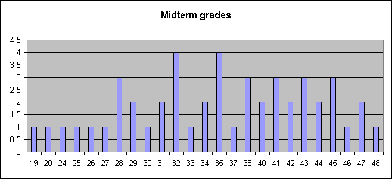
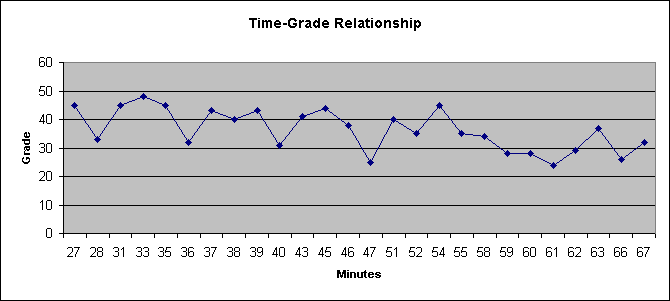
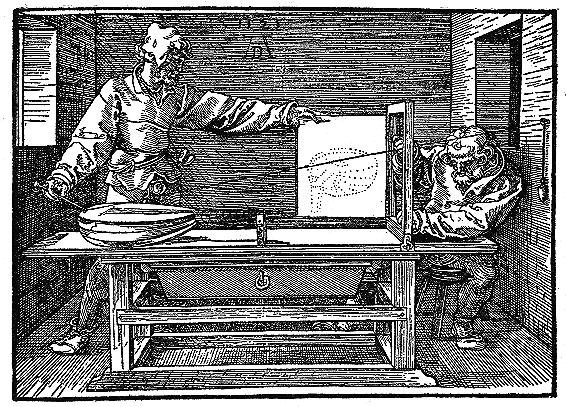
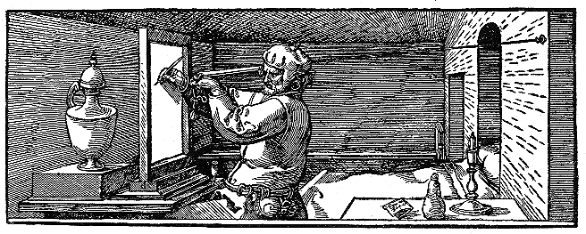

Here is a histogram of the grades.
The following plot shows that there was little relation between speed and grade.
Look at http://www.patents.ibm.com/details?&pn=US03816726__. The abstract and claims are in html, and so are easier to read. The complete patent is a bitmap. Note that 56 other patents reference it, up from 49 last spring.
Continuing my quest to relate everything to Computer Graphics, here're examples of the famous artist Albrecht Durer engraving himself doing perspective projections in 1525. They are from Hitachi's Viewseum at http://www.viewseum.com/. These are pictures 195, 196, and 197.

Pictures for Geometry 2.

Pictures for Geometry 3.
Pictures for Geometry 4.
Here are two more examples of how simple homogeneous coordinates make projections.
First, assume that the view plane is z=0, and the center of projection is at (0,0,-d). d>0. Using similar triangles, things scale down by d/(z+d). In Cartesian terms,
This is the same as multiplying by this matrix:
| 1 | 0 | 0 | 0 |
| 0 | 1 | 0 | 0 |
| 0 | 0 | 0 | 0 |
| 0 | 0 | 1/d | 1 |
In the limit as d goes to infinity, and this becomes a parallel projection, we get in Cartesian terms,
This is the same as multiplying by this matrix:
| 1 | 0 | 0 | 0 |
| 0 | 1 | 0 | 0 |
| 0 | 0 | 0 | 0 |
| 0 | 0 | 0 | 1 |
Finally, here is a perspective projection onto an arbitrary view plane, with the center of projection at (0,0,0). Let the equation of the plane be ax+by+cz=1. The point (x,y,z) will project to (x',y',z') with ax'+by'+cz'=1, so its 3 components will be scaled down by 1/(ax+by+cz).
We get in Cartesian terms,
This is the same as multiplying by this matrix:
| 1 | 0 | 0 | 0 |
| 0 | 1 | 0 | 0 |
| 0 | 0 | 1 | 0 |
| a | b | c | 0 |
Now that we've seen several parts of the rendering pipeline (change of coordinates, clipping, projection), let's see a summary of how other parts of the process might look. We see more details later.
Your object's surface is probably a curved patch, such as a bicubic parametric patch. u and v are 2 parameters, and range from 0 to 1. a, b, and c are 48 coefficients defining the patch.
Why cubic? It's the lowest degree that allows adjacent patches to be created whose second derivates match at the join.
You need a lighting equation that takes:
the direction to the light source,
the normal to the surface, and
the direction to the viewer,
and gives the intensity at a point.
You can calculate the normal to the bicubic patch at any point. Take the partial derivatives in two directions, find their cross-product, and normalize the result. However, that's probably too slow, so we approximate.
Split the surface into flat patches, and shade each patch separately.
The fastest way is flat shading, where the whole patch is the same intensity. However, the boundaries between the patches will be obnoxious, because the Mach band effect amplifies sudden intensity changes.
Gouraud shading is the next better, and slower method. Calculate the normal to the surface at each corner of the patch. Use that to calculate the intensities at the corners. Linearly interpolate the intensity at each interior point.
One problem is that Gouraud shading will never generate a highlight inside a patch.
The next better, and slower, method is Phong shading. Here, we take the normals at the 4 corners, and interpolate an approximate normal at each interior point. We have to normalize each interpolated normal (make its length to be one.) Then we input that into the lighting equation to find each point's intensity.
It's not enough that each separate image we shade look good. If we're generating a video sequence, then the shading has to be consistent from frame to frame.
Copyright © 1998-9, Wm. Randolph Franklin. You may use my material for non-profit education and research, provided that you acknowledge me and preserve this notice.